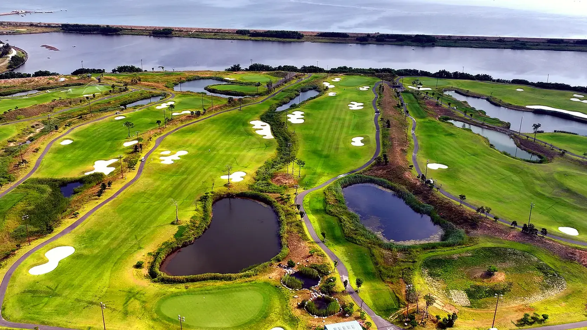
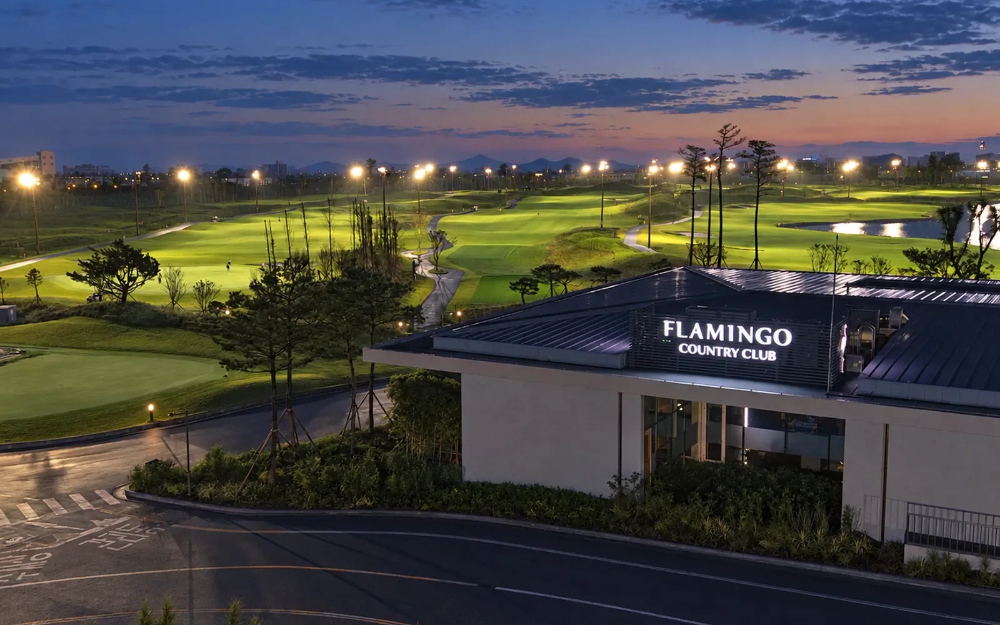
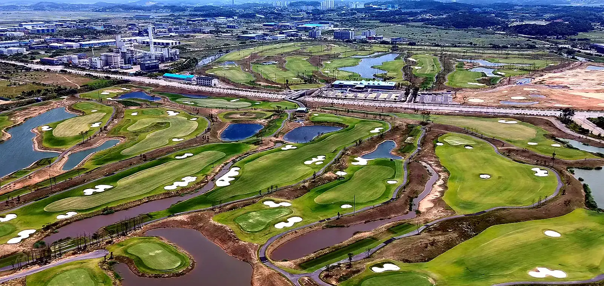

10월 11일, 플라밍고CC 18번 홀에서 KPGA투어 어메이징크리 오픈의 초대 챔피언이 결정됐습니다. 이대한 선수가 나흘 합계 18언더파 262타로 1타 차 우승을 거뒀고, 마지막 홀까지 순위가 갈리는 승부였습니다. 총상금 7억 원 규모의 정규투어 대회가 개장 3년 된 골프장에서 열렸다는 사실만으로도 이례적인데, 플라밍고CC는 올해 4월 챌린지투어와 6월 챔피언스투어까지 이미 치른 뒤였습니다. 한 골프장이 한 해에 KPGA의 1부, 2부, 시니어 대회를 모두 여는 일은 흔하지 않습니다.

핵심 데이터 한눈에
2026년, 플라밍고CC에서 열린 대회들
- 4월KPGA 챌린지투어 5회 대회2부 투어 대회를 처음 치르며 토너먼트 운영을 시작했습니다.
- 6월 17~18일KPGA 챔피언스투어, 레전드 클래식 시리즈 236홀 네 개 코스를 모두 대회장으로 쓰며 이틀간 진행했습니다. 두 부문 합산 총상금 2억 원.
- 7월KPGA 프로 선발전프로 자격을 가르는 선발전 코스로 쓰였습니다.
- 10월 8~11일KPGA투어 어메이징크리 오픈올해 신설된 정규투어 대회. 총상금 7억 원, 우승 상금 1억 4,000만 원. 링크스와 파크 코스를 이어 파70으로 세팅했습니다. 이대한 선수가 18언더파 262타로 초대 챔피언이 됐고, 브랜던 케왈라마니 선수가 1타 차 2위였습니다.
- 10월 20~21일2026 타임폴리오 with 라미드관광 전국초등학생골프대회2024년부터 매년 열어 온 유소년 대회. 정규투어가 치러진 링크스와 파크 코스를 그대로 어린 선수들에게 개방합니다.
세 투어가 한 코스에 몰린 데에는 순서가 있었습니다. 골프장 측은 챌린지투어와 시니어투어, 프로 선발전을 치르며 선수와 협회에서 받은 피드백을 코스 관리에 반영해 왔다고 밝혔습니다. 정규투어를 앞두고는 그린과 페어웨이를 집중 관리해 그린 스피드를 3.7m까지 끌어올렸습니다. 작은 대회에서 검증을 쌓아 큰 대회로 올라간 과정입니다.

선수들이 남긴 말
토너먼트 코스의 평가는 결국 그 위에서 뛴 선수들의 입에서 나옵니다. 어메이징크리 오픈을 마친 뒤 국민일보가 전한 선수들의 말입니다.
"뉴질랜드 코스에 온 것 같은 느낌이었다. 페어웨이 관리가 잘 돼 있었고 그린 컨디션도 정말 좋았다."
"지금까지 치른 대회 가운데 페어웨이가 가장 좋았고, 스코어가 쉽게 나지 않아 선수들의 도전 의식을 자극하는 코스."
"코스 상태가 너무 좋아 많은 골퍼들이 직접 와서 경험해 봤으면 좋겠다."
스포츠서울은 대회 기간 선수들의 반응을 "단연 올해 최고 코스"라는 제목으로 전했습니다. 스코어가 쉽게 나지 않는데도 선수들이 코스를 칭찬했다는 점이 눈에 띕니다. 어렵지만 공정한 코스, 잘 관리된 페어웨이와 그린이라는 평가는 프로가 아닌 일반 골퍼에게도 그대로 적용되는 조건입니다.
서해 평지에 만든 링크스
플라밍고CC는 당진 석문국가산업단지 안, 서해와 맞닿은 약 113만㎡ 부지에 2023년 7월 문을 열었습니다. 운영사는 라미드그룹입니다. 코스는 산을 깎아 만든 산악형이 아니라 바다 옆 평지에 펼친 링크스와 파크랜드 스타일입니다. 평탄해서 걷기 편하지만, 바닷바람과 곳곳의 워터해저드가 매 홀 판단을 요구합니다. 정규투어에서 승부가 마지막 홀까지 1타 차로 이어진 이유도 여기에 있습니다.
| 구분 | 내용 |
|---|---|
| 위치 | 충남 당진시 석문국가산업단지 내, 당진IC에서 차로 15분 |
| 규모 | 36홀 (링크스, 파크, 듄스, 리버 각 9홀). 두 코스를 이어 18홀로 라운드 |
| 대회 코스 | 링크스와 파크 코스, 파70, 6,965야드. 2번 홀은 711야드로 평소 파6, 대회에서는 파5로 운영 |
| 코스 성격 | 서해 평지의 링크스와 파크랜드 결합. 바닷바람과 워터해저드가 변수. 천연잔디 |
| 클럽하우스 | 천창으로 빛이 들어오는 클럽하우스와 예술 작품, 랜드마크 플라밍고 조형물 |
| 개장 | 2023년 7월. 2025년 12월 36홀로 확대 등록 |
파70이라는 구성도 짚어 둘 만합니다. 국민일보에 따르면 올해 세계 4대 메이저 대회 중 세 개가 파70 코스에서 열렸습니다. 파5 홀이 둘뿐인 대신 긴 파4 홀이 많아 샷의 정확도가 스코어를 가르는 구성입니다. 711야드 2번 홀처럼 평소에는 파6으로 운영되는 홀이 대회에서 파5가 되는 장면은 일반 골퍼가 프로의 체급을 실감하게 하는 대목이기도 합니다.

대회 코스가 일상 라운드에 주는 것
프로 대회를 유치하는 골프장은 코스 관리 기준이 달라집니다. 대회 세팅을 위해 끌어올린 그린 스피드와 페어웨이 상태는 대회가 끝났다고 바로 내려가지 않습니다. 선수와 협회의 피드백이 관리 매뉴얼에 남고, 그 기준이 다음 해 일상 라운드의 코스 품질이 됩니다. 플라밍고CC는 여기에 정규투어가 열린 코스를 유소년 대회에 그대로 개방하는 방식으로, 토너먼트 코스를 특정 선수만의 무대가 아니라 지역과 다음 세대가 함께 쓰는 자산으로 두고 있습니다.
라미드그룹은 앞으로 KPGA뿐 아니라 KLPGA 대회까지 꾸준히 유치해 남녀 프로 무대를 아우르는 토너먼트 코스로 키우겠다고 밝혔습니다. 골프를 건강수명을 늘리는 활동으로 보는 로컬, 웰니스, 롱제비티라는 운영 철학도 함께 내걸었습니다. 개장 3년 만에 세 투어를 치른 골프장이 다음에 어떤 대회를 품을지, 당진 서해안의 이 코스는 이제 지켜볼 이유가 분명한 곳이 됐습니다.
플라밍고CC 골프 이용권 안내
씨유레저는 플라밍고CC 골프 이용권 회원을 모집하고 있습니다. 기명 이용권과 무기명 이용권 두 가지로, 기명인과 동반자를 포함한 4인 전원이 예약 시점 그린피의 절반으로 라운드하는 구조입니다. 무기명 이용권은 기명인이 방문하지 않아도 4명이 이용할 수 있어 거래처 초청이나 동호회 명의로 쓰기에 맞습니다. 만기는 10년이며 만기 시 반환이 가능합니다. 한정 구좌로 모집하며, 상세 조건은 상담에서 안내합니다.